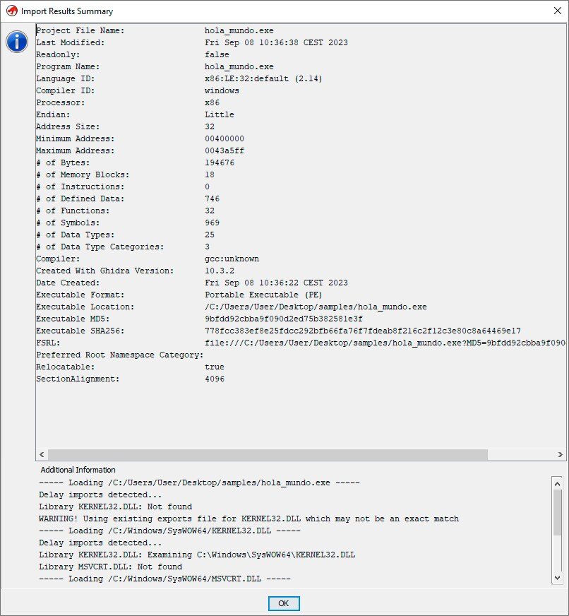
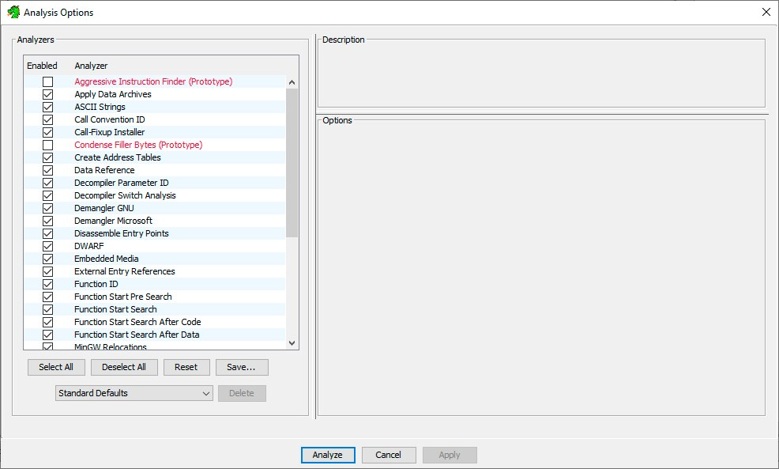
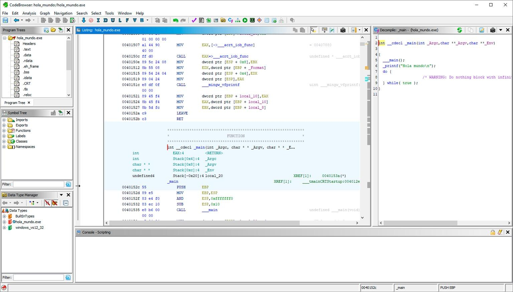
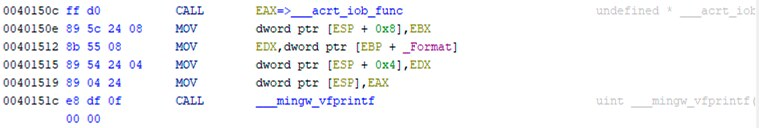

Análisis estático avanzado en Windows
Las técnicas del módulo 10 —hashes, cadenas, importaciones, secciones— identifican y caracterizan una muestra sin mirar directamente su código. Este módulo da el siguiente paso: leer ese código. El análisis estático avanzado usa decompiladores y desensambladores para convertir el código máquina de un ejecutable en algo que un analista puede leer línea a línea, sin necesidad de ejecutarlo.
1 Decompiladores y desensambladores
El análisis estático avanzado consiste en estudiar el código del ejecutable con la ayuda de dos tipos de herramientas:
Decompilador
Convierte el código máquina de un binario en código de un lenguaje de alto nivel, generalmente el lenguaje fuente en el que fue programado. Funciona especialmente bien con lenguajes y frameworks como Java y .NET.
Desensamblador
Convierte el código máquina de un binario en lenguaje ensamblador (módulo 8) de la arquitectura para la que fue creado el binario.
2 Herramientas de análisis estático avanzado
La herramienta adecuada depende del lenguaje o la arquitectura del binario a analizar:
Ghidra
Suite de ingeniería inversa gratuita de la NSA. Actúa como desensamblador para cualquier arquitectura soportada y como decompilador de C. Es la herramienta que se detalla en este módulo.
dnSpy
Decompilador (y depurador) para ejecutables .NET, .NET Core y Unity. Se detalla en el módulo 13, ya que su función principal en este curso es la depuración.
IDA Pro / IDA Free
Uno de los desensambladores comerciales más veteranos y utilizados en la industria del análisis de malware.
Interactive Delphi Reconstructor
Decompilador especializado en ejecutables compilados con Delphi.
Bytecode Viewer
Decompilador para aplicaciones Java, que trabaja sobre el bytecode de la JVM en lugar de código máquina nativo.
3 Ghidra: primeros pasos
Ghidra es una suite de ingeniería inversa gratuita y de código abierto, desarrollada por la National Security Agency (NSA) de Estados Unidos. Funciona como desensamblador para múltiples arquitecturas y como decompilador de C; su interfaz gráfica está escrita en Java (Swing) y el motor de decompilación en C++.
Antes de analizar un fichero, Ghidra organiza el trabajo en proyectos. Crear uno es el primer paso:
- En el menú principal, File > New Project…
- Se elige Non-Shared Project (proyecto no compartido, para trabajo individual) y se pulsa Next.
- Se indica la carpeta donde se guardará el proyecto y un nombre para él, y se pulsa Finish.
- El nuevo proyecto, vacío, aparece en el panel principal de Ghidra.
4 Importar y analizar un fichero
Con el proyecto creado, el fichero sospechoso se incorpora mediante File > Import File…. Ghidra detecta automáticamente el formato (por ejemplo, Portable Executable), la arquitectura y el lenguaje del binario, aunque ambos campos se pueden ajustar manualmente si hiciera falta. Al terminar la importación, muestra un resumen con las características del fichero:

Al abrir el fichero importado por primera vez, Ghidra advierte que todavía no ha sido analizado y ofrece hacerlo en ese momento. El análisis ejecuta un conjunto configurable de analizadores —identificación de funciones, referencias de datos, decompilación, desmontaje de puntos de entrada, búsqueda de cadenas ASCII, y muchos más— que Ghidra aplica automáticamente sobre el binario antes de que el analista empiece a trabajar con él:

5 La interfaz de Ghidra
Una vez analizado, el fichero se abre en el CodeBrowser, la ventana principal de trabajo de Ghidra, organizada en varios paneles:

| Panel | Contenido |
|---|---|
| Árbol del programa | Las secciones del PE (módulo 9): .text, .data, .rdata, etc. |
| Árbol de símbolos | Importaciones, exportaciones, funciones, etiquetas y clases identificadas en el binario. |
| Gestor de tipos de datos | Las estructuras y tipos de datos conocidos (como los vistos en el módulo 9: PEB, TEB…) que Ghidra puede aplicar al código. |
| Listing | El código desensamblado, instrucción a instrucción. |
| Decompile | El código decompilado a un lenguaje de alto nivel (similar a C), mucho más rápido de leer que el ensamblador equivalente. |
| Consola | Mensajes del propio Ghidra y salida de scripts. |
6 Leyendo el panel de desensamblado
El panel Listing organiza cada línea de código en columnas fijas, que conviene saber identificar:

| Columna | Qué muestra |
|---|---|
| Direcciones | La dirección de memoria donde se ubicará esa instrucción una vez cargado el ejecutable. |
| Bytes | Los bytes en crudo (en hexadecimal) que codifican la instrucción, tal como aparecerían en un editor hexadecimal (módulo 10). |
| Instrucciones | El mnemónico de la instrucción de ensamblador (módulo 8): MOV, CALL, LEAVE, RET... |
| Operandos | Los registros, valores inmediatos o direcciones de memoria sobre los que actúa la instrucción. |
| Comentarios | Anotaciones automáticas de Ghidra (por ejemplo, el nombre real de una función importada) o comentarios manuales añadidos por el analista. |
7 Cómo encaja este bloque con el análisis de malware
El análisis estático avanzado lleva al límite lo que se puede aprender de una muestra sin ejecutarla: no solo qué funciones importa o qué cadenas contiene (módulo 10), sino la lógica completa de su código, instrucción a instrucción o reconstruida en un lenguaje legible. Sigue compartiendo, eso sí, la limitación de todo análisis estático: nada de esto ocurre con el programa realmente en ejecución, así que técnicas de empaquetado u ofuscación fuertes pueden dejar el código desensamblado prácticamente ilegible. Ahí es donde entra el análisis dinámico avanzado del módulo 13: usar un depurador para observar —e incluso modificar— el programa mientras corre.